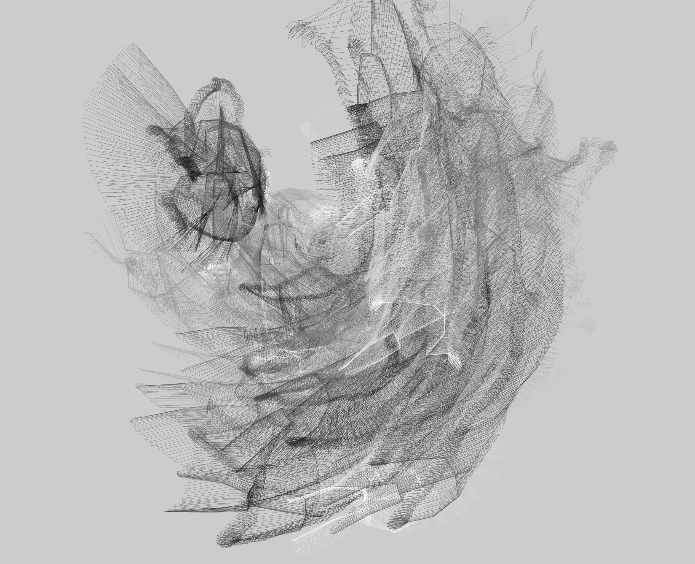
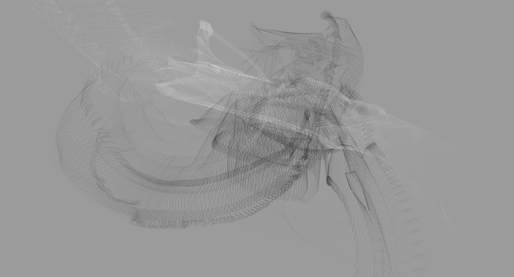
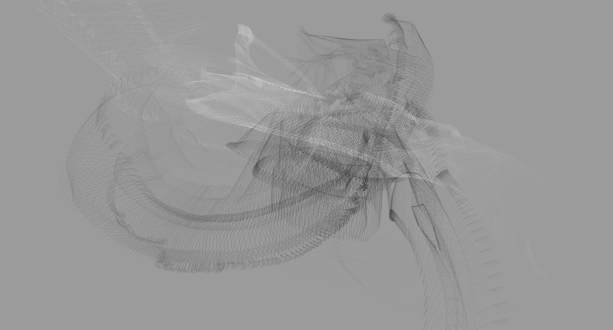
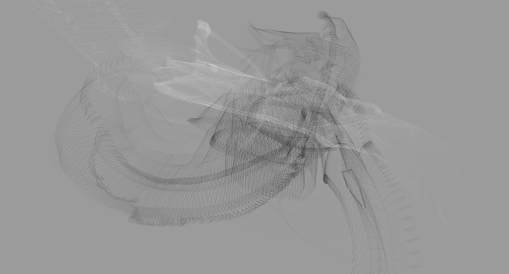

Motion Painting

A series paintings made by using motion capture data of a slow movement. The data was captured through a kinect specifically for this work, and used the motion capture database Brekle.
Inspiration
I experimented with what it would look like to show all the frames of the motion capture by not only drawing the current frame- this was inspired by Etienne-Jules Marey. The result of this was interesting at first, but it became incomprehensible overtime
Images




 



